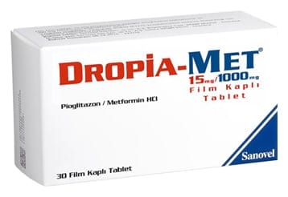

Dropia-Met 15 mg /1000 mg Film Kaplı Tablet, 60 Adet

Ne için kullanılır
KT · Bölüm 1DROPİA-MET, pioglitazon ve metformin içerir. DROPİA-MET, 30, 60 ve 90 film tablet içeren Alü/Alü blister ambalajda sunulmaktadır. Beyaz renkli, oblong film kaplı tabletler olarak sunulmaktadır.
DROPİA-MET şeker hastalığının tedavisinde kullanılan bir ilaç olup insüline bağlı olmayan şeker hastalığının (tip 2 diabetes mellitus) tedavisinde kullanılır. Tip 2 diabetes mellitus yetişkinlikte özellikle çok kilo alınması ve vücudun yeterli derecede insülin (kan şekerini kontrol eden hormon) üretememesi veya etkili bir şekilde insülini kullanamaması sonucu oluşmaktadır.
DROPİA-MET, Tip 2 şeker hastalığı (diyabet) tedavisinde yalnızca diğer ağızdan verilen şeker hastalığı ilaçları ile kontrol altına alınamayan hastalarda tek başına veya diğer ağızdan verilen şeker hastalığı ilaçları ile birlikte kullanılır. DROPİA-MET, tip 2 şeker hastalığı (diyabet) bulunan hastalarda vücudun kendi ürettiği insülini daha iyi kullanmasını sağlayarak, kandaki şeker seviyesini kontrol etmeye yardımcı olur. Doktorunuz DROPİA-MET tedavisinin yeterliliğini kullanmaya başlamamızdan 3-6 ay sonra kontrol edecektir.